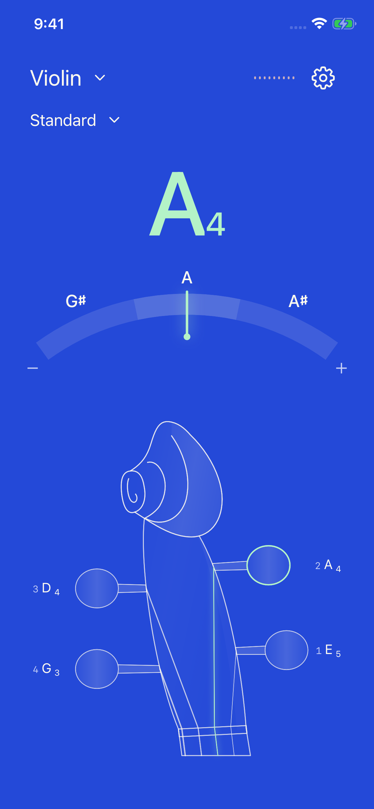
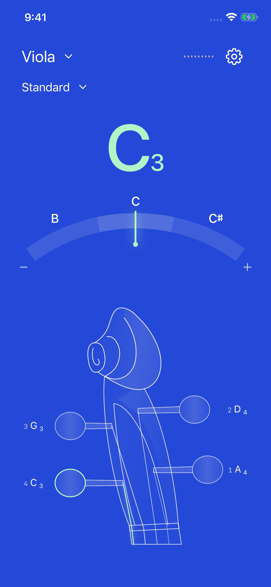
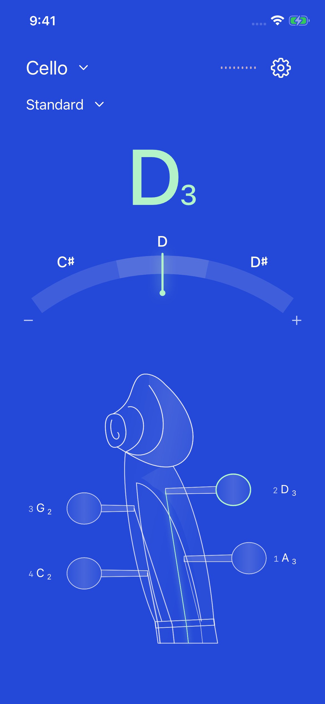
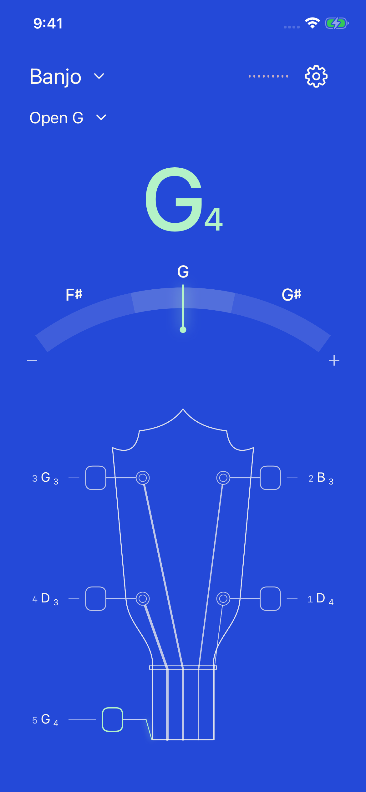
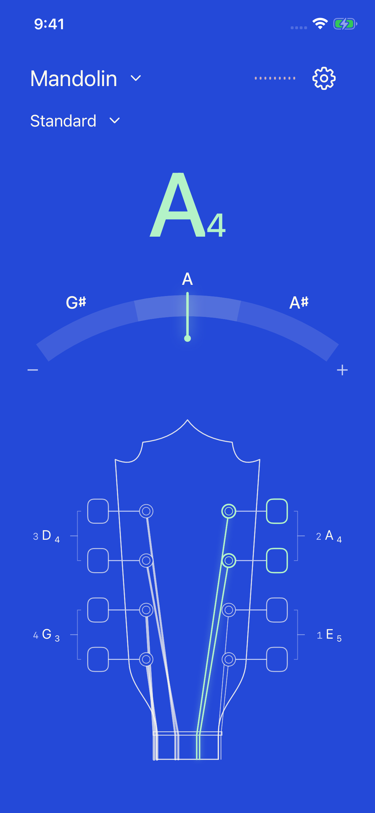

以下全部是原生模拟器实拍截图。输入状态来自 iPhone 16e；待机、全部调准状态来自 iPhone SE。检查重点：识别度、比例、线条连接、标签归属和调准反馈。

吉他 · Guitar
弦钮完整移到琴头外侧，轴柄水平连接内部轴柱；标签引线留出间隙。

尤克里里 · Ukulele
缩短琴头比例，收紧 2+2 弦钮间距，避免像拉长的吉他。

贝斯 · Bass
四弦花瓣与斜轴共轴、上下对称；五、六弦左右镜像，弦钮完整位于琴头外。

小提琴 · Violin
卷轴改为连续卷曲，柔化琴轴箱入口，完成标记去掉重复圆框。

中提琴 · Viola
沿用提琴家族结构，保留较宽比例与正确音域，不增加装饰线。

大提琴 · Cello
保留宽琴轴箱、低音八度和短指板；曲线与小提琴同样收顺。

班卓 · Banjo
短第五弦保留侧边起点；弦钮一起变绿，完成勾不再叠大圆框。

曼陀铃 · Mandolin
淡括线明确双弦分组；首页去掉重复 GDAE，保留八个实物弦钮。